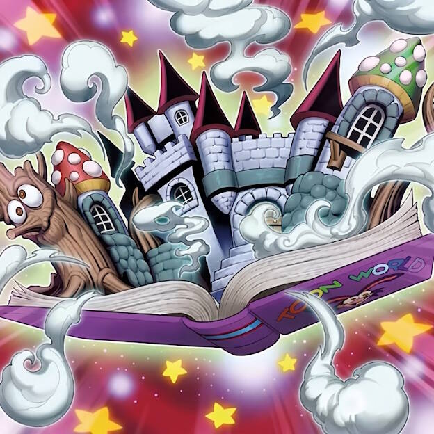

卡通
裁定
「舞台旋转」的效果盖放了场地的场合, 也能发动「滑稽暗黑兔」的③效果. 也能正常表侧表示放置.
被「墓穴的指名者」无效的「滑稽暗黑兔」双召时不会适用①效果.
场上存在「技能抽取」, 「滑稽暗黑兔」双召时不会适用①效果.
「以下效果1回合各能选择1次」种类的效果. 选择一个发动但被发动无效后. 这个回合不能再次选同一个来发动.
手卡公开中, 不能把手卡给对方观看. 可以确认已经公开的卡.
手卡公开中, 丢弃「转生炎兽 犰狳蜥」发动「电脑网挖矿」, 检索到「转生炎兽 羚羊」, 那个「转生炎兽 羚羊」也能发动①效果.
「完美世界 卡通世界」③效果在伤害步骤也能适用. 那只怪兽回来时, 自己不存在可用的怪兽区域的场合, 那只怪兽放置到墓地. 这张卡的效果被无效或是不在场上存在的场合, 那只怪兽也会回来.
「完美世界 卡通世界」的②效果也是卡的效果让怪兽被表侧除外的效果.
「看透心灵之眼」①效果原本不适用的场合, 在以下场合立刻适用: 1. 召唤之际之后(神宣时点过去后); 2. 魔法/陷阱卡发动时.
「看透心灵之眼」②效果发动后这张卡被无效的场合, 那个效果继续适用.
同一张「四花缭乱之灵使」的②效果被发动无效也不能在下个回合再次发动.
「看透心灵之眼」没有适用, 对方C1发动一个效果, 我方C2使「看透心灵之眼」①效果满足的场合, 会立刻适用, 对方手牌立刻公开. 这时, 对方不能发动手卡的诱发效果. C3再使「看透心灵之眼」不满足的场合, 立刻不适用, 对方手卡立刻变为非公开. 这时, 对方可以再选择是否发动手卡中非公开的诱发效果.
「看透心灵之眼」适用中, 我方可以随时确认对方盖卡的情况. 也不能使用「超融合」将对方里侧表示的怪兽作为融合召唤的素材.
被代替破坏的卡不能适用效果代替破坏.
注意
「卡通」怪兽与卡通怪兽存在区别.
「邪魔箱」, 「滑稽暗黑兔」, 「漫画猫」都只有「卡通世界」在场上时才在场上视为卡通怪兽.
「邪魔箱」, 「滑稽暗黑兔」, 「漫画猫」被无效后都不是卡通怪兽.
「滑稽暗黑兔」的①效果是灵兽长老同款效果.
如果不声明是因为「滑稽暗黑兔」的①效果进行召唤, 在双方起争执时, 可能会定为是进行通常的通常召唤.
不能适用「滑稽暗黑兔」的①效果把怪兽盖放. 可以表侧表示上级召唤.
C1发动「完美世界 卡通世界」, C2发动「漫画猫」的②效果. 处理时不能解放对方的怪兽.
「暗眼幻想师·无脸幻想师」有幻想魔族通用效果.
「暗眼幻想师·无脸幻想师」无论如何都不是卡通怪兽.
「卡通书签」检索效果一回合只有一次.
「完美世界 卡通世界」②效果一回合最多使用3次. 同一张一回合只能开1次.
有「卡通」卡卡名记述的卡指的是: 效果文本中包含特定「卡通」卡卡名的卡.
「看透心灵之眼」②只无效发动的效果.
「卡通恐怖」需要场上存在「卡通世界」以及卡通怪兽才能发动.
需要自己场上有「防火」怪兽, 才能发动「保护码语者」的②效果.
自肃
「魔界特派员 死亡主播」在连接召唤的回合不能作为连接素材.
召唤条件
「重铠装-希望鳍条枪兵」需要3只等级4怪兽才能叠放.
「完美电子多元驱动蛇·神龙」的素材必须全是连接怪兽.
「连接解码员」必须是等级4以下的电子界族怪兽.
「纳祭之魔·阿尼玛」必须是Token以外的等级1怪兽.